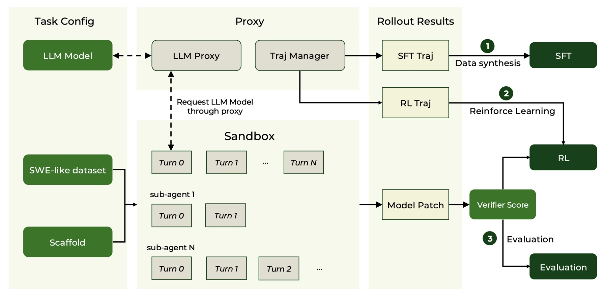
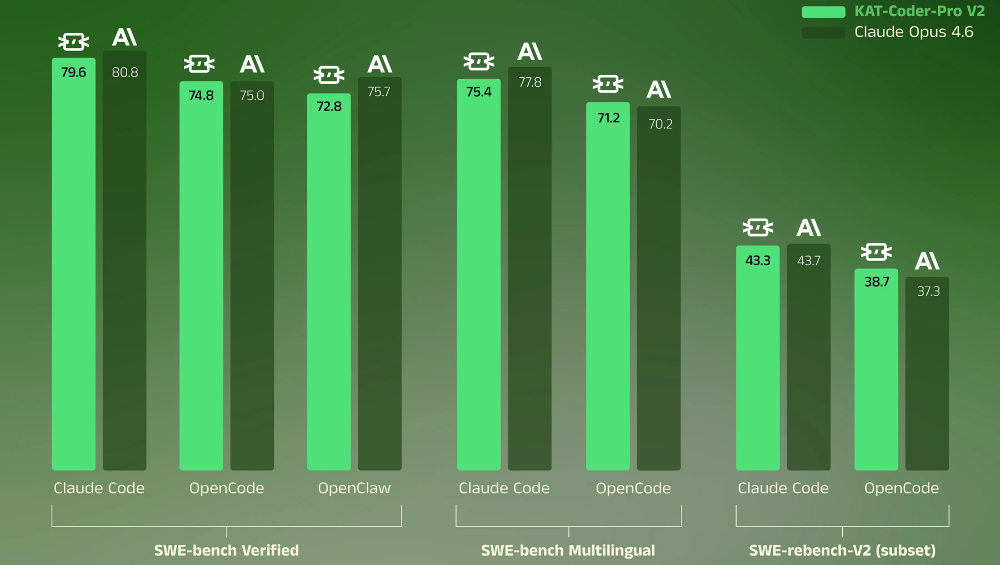

A coding agent has to be several things at once: read a repository, build a frontend, drive a terminal, search the web, and hold a general conversation in between. Training all of that under one objective is the default, and it is not obviously right — capabilities with different reward shapes compete for the same gradients.
一个编程智能体必须同时胜任好几件事：读懂仓库、搭出前端、操作终端、检索网页，并在其间维持正常的通用对话。把所有能力塞进同一个训练目标是默认做法，但这未必正确——奖励形态不同的能力会争夺同一批梯度。
A second problem appears only once the model works. Coding agents are not called directly; they are called through a scaffold that owns the tools, the context budget and the retry logic. Behaviour tuned inside one harness can fall apart in another, and a benchmark score rarely says which harness produced it.
第二个问题只在模型能跑之后才浮现。编程智能体不是被直接调用的，而是通过一套框架被调用，而框架掌握着工具、上下文预算与重试逻辑。在某一套框架里调出来的行为，换一套可能失效，而基准分数很少说明它是在哪套框架下测得的。
KAT-Coder V2 treats both problems as one training-sequence question. Train five domain experts separately, then unify them by on-policy distillation into a model that has to work across scaffolds. The result is 79.6% on SWE-bench Verified under Claude Code, against Opus 4.6 at 80.8%.
KAT-Coder V2 把这两个问题当作同一个训练顺序问题处理：先分别训练五个领域专家，再用在线策略蒸馏把它们统一成一个必须跨框架工作的模型。结果是 Claude Code 下 SWE-bench Verified 79.6%，对应 Opus 4.6 的 80.8%。
Specialize-then-Unify: five experts — SWE, WebCoding, Terminal, WebSearch, General — each with independent SFT and RL, then consolidated into one model by on-policy distillation.
先专精再统一：SWE、WebCoding、Terminal、WebSearch、General 五个专家各自独立完成 SFT 与 RL，再通过在线策略蒸馏整合为单一模型。
The infrastructure is part of the contribution: KwaiEnv sustains tens of thousands of concurrent sandboxes, MCLA stabilises MoE RL, and Tree Training removes redundant computation over tree-structured trajectories with up to 6.2× speedup.
基础设施本身也是贡献：KwaiEnv 支撑数万个并发沙箱，MCLA 稳定 MoE 的 RL 训练，Tree Training 消除树状轨迹上的冗余计算，加速最高 6.2 倍。
Cross-scaffold numbers move a lot: 79.6 / 74.8 / 72.8 on SWE-bench Verified under Claude Code, OpenCode and OpenClaw. A coding score without its harness is not a complete measurement.
跨框架分数波动很大：Claude Code、OpenCode、OpenClaw 下的 SWE-bench Verified 分别为 79.6 / 74.8 / 72.8。脱离框架的编程分数不是一个完整的测量。
Specialize, then unify先专精，再统一
The five experts are not five slices of one dataset. They face different tool interfaces, different feedback latencies and different reward signals: repository work is verified by tests minutes later, terminal work by immediate exit codes, and web coding by something closer to aesthetic judgement.
五个专家不是同一份数据的五份切片。它们面对不同的工具接口、不同的反馈延迟和不同的奖励信号：仓库任务在几分钟后由测试判定，终端任务由即时的退出码判定，网页编程则更接近一种审美判断。
That heterogeneity is the argument for specialising. Forcing every signal into one objective from the start asks a single policy to trade off things that are not commensurable, and the usual outcome is a model that is adequate everywhere and good nowhere.
这种异质性正是支持专精的理由。从一开始就要求单一策略在不可通约的目标之间做取舍，通常的结果是一个哪儿都还行、哪儿都不精的模型。
Distillation is then the real test. On-policy distillation trains the student on trajectories relevant to its own current behaviour rather than on a fixed dataset, which matters because the student’s behaviour is not any expert’s behaviour. Unification has to keep each expert’s useful habit without averaging the distinctions away.
蒸馏才是真正的考验。在线策略蒸馏用与学生当前行为相关的轨迹来训练，而不是用一份固定数据集——这一点很关键，因为学生的行为并不等于任何一个专家的行为。统一阶段必须保留每个专家的有效习惯，而不是把差异抹平。


Environments are part of the model环境也是模型的一部分
Reinforcement learning for coding needs somewhere to run. KwaiEnv is that layer: a modular infrastructure sustaining tens of thousands of concurrent sandbox instances, which is the difference between running RL on repository tasks and running it on toy ones.
面向编程的强化学习需要有地方真正跑起来。KwaiEnv 就是这一层：一套模块化的基础设施，可支撑数万个并发沙箱实例——这正是“在仓库任务上做 RL”与“在玩具任务上做 RL”的区别。
Two training-side techniques address problems that only appear at that scale. MoE RL is unstable in ways dense RL is not, and MCLA is the stabiliser. Agent rollouts share long prefixes because actions branch into a tree, and Tree Training removes the redundant recomputation, with up to 6.2× speedup reported.
两项训练侧技术针对只在这个规模上才会暴露的问题。MoE 的 RL 存在稠密模型没有的不稳定性，MCLA 负责稳定它；智能体 rollout 由于动作分叉成树而共享大量前缀，Tree Training 则消除这部分冗余重算，报告加速最高 6.2 倍。
The third axis is scaffold generalisation: deliberately varying the harness during training so the policy does not overfit one execution interface. That choice is what makes the cross-scaffold evaluation meaningful rather than ceremonial.
第三个维度是框架泛化：在训练中有意改变执行框架，使策略不会过拟合到某一种接口。正是这个选择，让跨框架评测变得有实质意义，而不只是走个过场。
Model evaluations模型评测
Published results, with the evaluation setting kept alongside each comparison. Scores are percentages; higher is better. Bold marks the highest reported value in each row, including ties.保留原始评测条件；分数单位为百分比，越高越好。粗体表示每行已报告数值中的最高值（含并列）。
| Benchmark | KAT-Coder V2 | Claude Opus 4.6 |
|---|---|---|
| SWE-bench VerifiedClaude Code | 79.6% | 80.8%* |
| SWE-bench VerifiedOpenCode | 74.8% | 75.0% |
| SWE-bench VerifiedOpenClaw | 72.8% | 75.7% |
| SWE-bench MultilingualClaude Code | 75.4% | 77.8%* |
| SWE-bench MultilingualOpenCode | 71.2% | 70.2% |
| SWE-rebench-V2Subset · Claude Code | 43.3% | 43.7% |
| SWE-rebench-V2Subset · OpenCode | 38.7% | 37.3% |
Technical report v1, Table 2. Starred Opus scores (80.8*, 77.8*) are quoted from Anthropic; other results were evaluated on KwaiEnv. Each row retains its scaffold, because the harness changes the measured outcome. Source data
| Benchmark | KAT-Coder V2 | GLM-5 | MiniMax M2.7 | Claude Opus 4.6 | GPT-5.4 | Gemini 3.1 Pro |
|---|---|---|---|---|---|---|
| PinchBenchBest score | 88.7% | 86.4% | 87.1% | 87.4% | 90.5% | 86.7% |
| PinchBenchAverage score | 81.9% | 80.3% | 81.8% | 82.3% | 81.6% | 75.9% |
| Claw-EvalPass^3 | 55.6% | 57.7% | 51.9% | 66.3% | 66.3% | 50.0% |
| Claw-EvalAverage score | 73.4% | 73.0% | 70.7% | 79.3% | 80.6% | 74.2% |
Technical report v1, Table 3. OpenClaw evaluations; peer results were retrieved from PinchBench and Claw-Eval on March 25, 2026. Best and average scores are distinct metrics. Source data
| Benchmark | KAT-Coder V2 | GLM-5 | MiniMax M2.7 | Claude Opus 4.6 | GPT-5.4 | Gemini 3.1 Pro |
|---|---|---|---|---|---|---|
| Terminal-Bench HardTerminal reasoning | 46.8% | 43.2% | 39.4% | 46.2% | 57.6% | 53.8% |
| τ²-Bench TelecomTool use | 93.9% | 98.2% | 84.8% | 92.1% | 91.5% | 95.6% |
| AA-LCRLong-context reasoning | 68.0% | 63.3% | 68.7% | 70.7% | 74.0% | 72.7% |
| IFBenchInstruction following | 67.0% | 72.3% | 75.7% | 53.1% | 73.9% | 77.1% |
Technical report v1, Table 5. KAT results use KwaiEnv; peer results come from Artificial Analysis, retrieved March 25, 2026. These are reported comparisons, not a uniform re-run of all models. Source data
| Benchmark | KAT-Coder V2 | GLM-5 | Kimi K2.5 |
|---|---|---|---|
| Landing PageReport evaluation score | 59.8% | 57.6% | 54.6% |
| SlidesReport evaluation score | 57.6% | 42.8% | 34.8% |
| Data VisualizationReport evaluation score | 67.6% | 42.4% | 46.0% |
Technical report v1, Table 4. Frontend generation evaluation; these scores are separate from repository issue-resolution benchmarks. Source data
What changes when the scaffold changes换一套框架，结果就变了
The headline number is harness-dependent. SWE-bench Verified gives 79.6 with Claude Code, 74.8 with OpenCode and 72.8 with OpenClaw, against Opus 4.6 at 80.8, 75.0 and 75.7. The first Opus figure is quoted from Anthropic while the other two are measured in KwaiEnv, so the comparison is not uniform and should be read that way.
头条数字依赖于框架。SWE-bench Verified 在 Claude Code、OpenCode、OpenClaw 下分别为 79.6、74.8、72.8；Opus 4.6 对应为 80.8、75.0、75.7。其中第一个 Opus 数字引自 Anthropic，另两个由 KwaiEnv 实测，因此对比并不完全对等，应当按这个前提阅读。
The rest of the table covers what a repository-repair score cannot. PinchBench best is 88.7 with an 81.9 average, and Claw-Eval reports 55.6 for Pass^3 against a 73.4 average score — reliability and average performance are different claims and should not be collapsed into one.
表格的其余部分覆盖了仓库修复分数无法覆盖的内容。PinchBench 最佳分为 88.7、平均分 81.9；Claw-Eval 的 Pass^3 为 55.6、平均分为 73.4——可靠性与平均表现是两个不同的论断，不应合并成一个。
Two further results are worth noting. The model ranks first across all three frontend aesthetics scenarios, and it holds generalist scores on Terminal-Bench Hard (46.8) and tau^2-Bench (93.9). Generalisation beyond coding is what a specialist recipe is most likely to lose.
另有两项结果值得一提。该模型在三个前端美观场景中均排名第一，并在 Terminal-Bench Hard（46.8）与 tau^2-Bench（93.9）上保持了通用能力。编程之外的泛化能力，恰恰是专精式训练方案最容易丢掉的部分。


Capability fusion is only half the problem能力融合只是问题的一半
Specialisation is a way to make progress on heterogeneous tasks without forcing every signal into one objective at once. Distillation is then the honest test of whether those gains coexist — and the measured cross-scaffold drop shows they do not transfer for free.
专精提供了一条路径：不必一开始就所有信号挤进同一个目标，也能在异质任务上取得进展。蒸馏则是检验这些收益能否共存的诚实测试——而实测到的跨框架掉分说明，它们并不能免费迁移。
The 6.8-point spread between Claude Code and OpenClaw on the same benchmark is the number to remember. It is larger than most gaps between competing models, which makes harness choice a first-order variable in any coding-agent evaluation rather than a footnote.
同一基准上 Claude Code 与 OpenClaw 之间 6.8 个点的差距，是值得记住的数字。它比多数竞品模型之间的差距还大，这意味着在任何编程智能体评测中，框架选择都是一阶变量，而不是脚注。
For deployment this argues for measuring on your own stack. Benchmark scores specify tools, permissions and failure recovery only implicitly; a model that ranks well under one scaffold still needs its own retry behaviour, context budget and error handling checked before it is trusted with a real repository.
对部署而言，结论是要在自己的技术栈上测。基准分数只是隐含地规定了工具、权限与失败恢复机制；一个在某套框架下排名不错的模型，在被交到真实仓库上之前，仍需检查它自己的重试行为、上下文预算与错误处理。
Paper & authors
Technical report 2026
Cite this work
@misc{li2026katcoderv2technicalreport,
title = {KAT-Coder-V2 Technical Report},
author = {Fengxiang Li
and Han Zhang
and Haoyang Huang
and Jinghui Wang
and Jinhua Hao
and Kun Yuan
and Mengtong Li
and Minglei Zhang
and Pengcheng Xu
and Wenhao Zhuang
and Yizhen Shao
and Zongxian Feng
and Can Tang
and Chao Wang
and Chengxiao Tong
and Fan Yang
and Gang Xiong
and Haixuan Gao
and Han Gao
and Hao Wang
and Haochen Liu
and Hongliang Sun
and Jiabao Li
and Jingwen Chang
and Jun Du
and Junyi Peng
and Leizhen Cui
and Meimei Jing
and Mingqi Wu
and Shangpeng Yan
and Shaotong Qi
and Suzhe Xu
and Wenxuan Zhao
and Xianda Sun
and Xuan Xie
and Yanbo Wang
and Yao Xia
and Yinghan Cui
and Yingpeng Chen
and Yong Wang
and Yuze Shi
and Zhiwei Shen
and Ziyu Wang
and Ming Sun
and Lin Ye
and Bin Chen},
year = {2026},
eprint = {2603.27703},
archivePrefix = {arXiv},
primaryClass = {cs.CL},
url = {https://arxiv.org/abs/2603.27703}
}